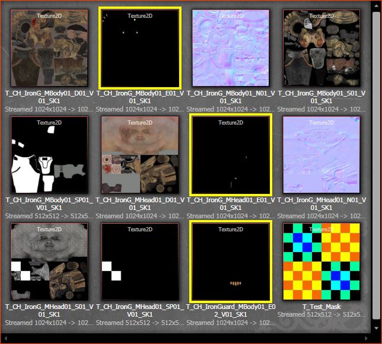
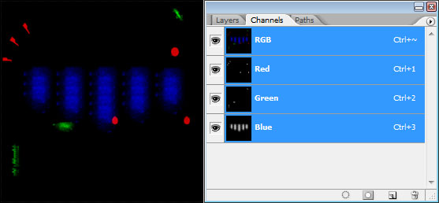
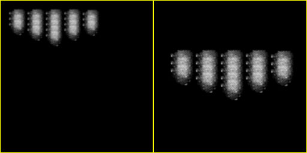
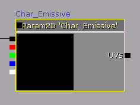
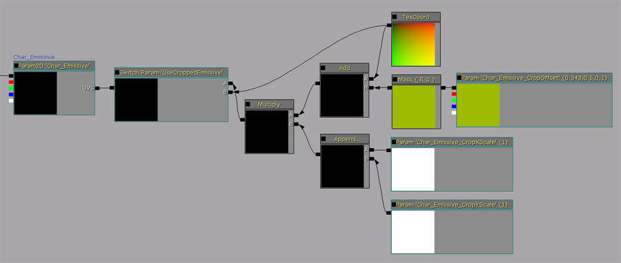
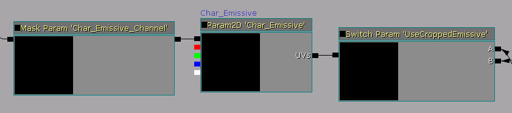
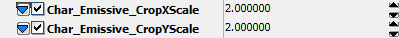
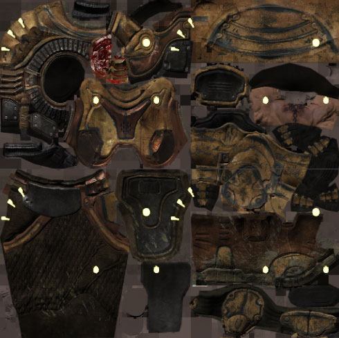
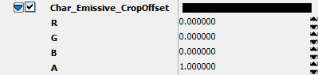
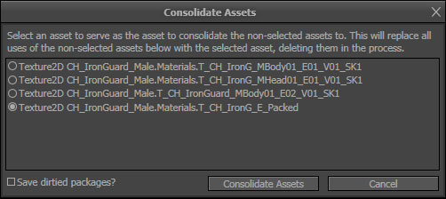

UDN
Search public documentation:
TextureOptimizationTechniquesCH
English Translation
日本語訳
한국어
Interested in the Unreal Engine?
Visit the Unreal Technology site.
Looking for jobs and company info?
Check out the Epic games site.
Questions about support via UDN?
Contact the UDN Staff
日本語訳
한국어
Interested in the Unreal Engine?
Visit the Unreal Technology site.
Looking for jobs and company info?
Check out the Epic games site.
Questions about support via UDN?
Contact the UDN Staff
贴图优化技术
概述
内容评定
主要材质默认值
 这个贴图尺寸为512x512，这个材质在实际游戏中从来没有用过或看见过，它只是作为主要材质中的默认值。问题主要材质中的任何贴图都会进入到子项中，不管子项材质是否会覆盖它。这问题可以通过使用简单的8x8个像素的黑色贴图简单地替换这个贴图来解决，该黑色贴图应该存放在通用的包中，以供很多具有类似设置的主要材质重复使用。同时需要注意的是，如果您有一个法线贴图使用贴图样本参数的材质，那么需要使用一个独立的占位符贴图，因为您一般总是想用一个法线贴图作为法线贴图的占位符。
这个贴图尺寸为512x512，这个材质在实际游戏中从来没有用过或看见过，它只是作为主要材质中的默认值。问题主要材质中的任何贴图都会进入到子项中，不管子项材质是否会覆盖它。这问题可以通过使用简单的8x8个像素的黑色贴图简单地替换这个贴图来解决，该黑色贴图应该存放在通用的包中，以供很多具有类似设置的主要材质重复使用。同时需要注意的是，如果您有一个法线贴图使用贴图样本参数的材质，那么需要使用一个独立的占位符贴图，因为您一般总是想用一个法线贴图作为法线贴图的占位符。
检查材质引用
 这个效果使用了看上去是灰度贴图的RGB输出，所以该贴图显然不是通道合并贴图的一部分。为了进一步调查，通过按下
这个效果使用了看上去是灰度贴图的RGB输出，所以该贴图显然不是通道合并贴图的一部分。为了进一步调查，通过按下 Texture 属性。在这个示例中，您可以看到贴图是个 512x512噪声平铺图。
下一步是找出是否有其他任何对象使用该贴图。右击贴图并从关联菜单中选择 Find All Materials Using This Texture(找到使用这个贴图的所有材质) 。这个命令是非常有用的，因为它会产生一个使用了正在讨论的贴图的材质集合。第一次运行该命令时较慢(根据游戏内容的尺寸不同在某些实例中大约花费5分钟的时间)。但是，一般在第一次运行之后会非常快的。
一旦生成了集合，选中它查看正在引用该贴图的其他资源。
在这个示例中，有很少的几个材质，所以它可可能在游戏中大量内容中共享。这没有暗示删除它将会获得内存节约，但是请记住这点，以便在需要更深层的优化的情况中使用。
通道合并和联合

每个贴图是一个尺寸为1024x1024的自发光贴图，具有三个颜色通道。同时，注意如何仅使用了每个贴图的一小部分。所有这些黑色像素正在不必要地占用内存。这里的问题是双重的，但是解决方案非常简单： 通过把每个贴图放到一个单独的通道中并剪辑它们使其使用尽可能少的贴图像素，从而来把贴图合并成一个单一的贴图中。 自发光贴图应用这种优化是非常理想的，因为它们柔弱、容易剪辑、并且没有太多细节。它们一般也不会对材质的整体外观造成很大影响。当然，如果不是这种情况，那么可能这个优化对那些特殊贴图和情况并不理想。 通过剪辑这些自发光贴图然后执行‘通道合并’可以节约大量的内存空间。首先，剪辑所有的自发光贴图，使它们适合256x256大小的区域。在某些情况下可能不仅仅是简单的剪辑。比如，您或许要沿着水平方向或垂直放下剪辑，然后沿着另一个方向缩放来压扁贴图。然后您可以在材质中展开压扁的材质，看一下显示是否正常。柔和的自发光贴图应该仍然是很好的。但是对于具有尖锐边缘的自发光贴图来说这就不是那么好了。
通过剪辑这些自发光贴图然后执行‘通道合并’可以节约大量的内存空间。首先，剪辑所有的自发光贴图，使它们适合256x256大小的区域。在某些情况下可能不仅仅是简单的剪辑。比如，您或许要沿着水平方向或垂直放下剪辑，然后沿着另一个方向缩放来压扁贴图。然后您可以在材质中展开压扁的材质，看一下显示是否正常。柔和的自发光贴图应该仍然是很好的。但是对于具有尖锐边缘的自发光贴图来说这就不是那么好了。
 现在，在Photoshop中，我将对这些自发光贴图进行通道合并，这意味着我将把每个自发光贴图存储到编译的3通道贴图中的每个颜色通道中。
现在，在Photoshop中，我将对这些自发光贴图进行通道合并，这意味着我将把每个自发光贴图存储到编译的3通道贴图中的每个颜色通道中。

关于颜色合贴图一个有用的注意事项是，我们使用的压缩格式是DXT1，它通过压缩机制中的方法把额外的数据位存储到贴图的绿色通道中。因此，如果您有一个需要较高频率细节的或者是非常精细的高光贴图，那么可以把它放到绿色通道中以获得最好的质量。 现在，即时把贴图大小剪辑为256,贴图仍然有可能具有大量的内存空间浪费。如果空间就是那些，并且在材质中已经对贴图进行了剪辑和偏移，那么为什么没有获得质量提升哪？ 通过获取一个贴图的高分辨率源美术资源，您可以在那个自发光贴图的高分辨率版本中进行剪辑，从而增加了那个通道中贴图的质量但是仍然使用同样的空间大小。
同时需要注意的是如果您正在想“如果我要包含第四个自发光贴图，那么我为什么向贴图中添加另一个通道哪？” 这里的问题是4个通道的贴图压缩为DXT5而不是DXT1，从压缩的角度来讲，DXT5的alhha通道是全分辨率，这意味着它占用和三个组合的颜色通道一样的内存。 这是为什么DXT5占用空间较大的原因。 这时，您可以保存并导出通道合并的贴图。 现在，需要设置主要材质以便支持剪辑和偏移自发光贴图。这确实给着色器添加了一些复杂性(6个指令)，但是因为您的贴图池占用量或许已经很高了，所以使用这几个指令是值得的。 如果您恰好知道主要着色器因为贴图而延迟，这意味着它需要花费更多的时间来处理贴图样本，那么处理像素着色器指令所以添加几个指令根本不会影响性能。您可以从材质的PIX捕获物中找到这个现象，并使用微软性能分析工具分析它。 最初，着色器仅直接获得自发光贴图。
我们需要可以在材质上偏移和到处移动贴图，所以可以添加一些简单的着色器数学表达式来处理这些情况，使用基于每个材质实例的参数。 (点击获得完整尺寸)
Static Switch Parameter(静态开关参数)允许您决定是否基于每个实例剪辑自发光贴图。静态开关作为一个二进制开关工作，这意味着如果您设置它为打开状态，它仅使用连接到“A”输入端的着色器指令；如果设置它为关闭状态，那么它将使用“B”端的指令。这意味着除非您“选择那样做”，否则您不会有额外的性能消耗。 关于开关的一个有用的注意事项，总是使用动词来命名开关参数是个好主意。比如，从切换开关创建一个动作。这将告诉第一次看到这个材质的人这两个选项的意思。比如，如果您将一个开关命名为"CroppedEmissive(剪辑自发光贴图)"，然后您查看着色器，您怎么知道那个选项对应哪个状态哪？ 如果命名为"UseCroppedEmissive(使用剪辑自发光贴图功能)"，别人一看名称就知道这个开关的动作、它所处的状态及是否选中了值。所以总是以动词命名开关参数。 这里的参数是非常简单的，参数 Char_Emissive_CropOffset 允许自发光贴图的X和 Y坐标轴闪光以便进行操作，然后X和Y缩放参数允许您独立地在一个坐标轴或另一个轴上缩放贴图。这允许您展开任何"压扁"的自发光贴图！ 有几种方法可以改进这个数学表达式，或许还会节约一两个指令，但是这个方法是向别人展示您所具有的不同选项的最好方法。 接下来，您需要选择要使用RGB通道合并贴图的哪个通道。添加一个StaticComponentMaskParameter到材质中允许选择性地使用新的合并贴图中的任何颜色通道，通过在着色器链中仅传入三个可能通道中其中一个来完成。
现在，点击主要着色器上的Apply（应用）按钮，并打开其中一个使用主要材质作为父项的实例，以便您可以测试查看修改是否能够正常运作。 首先，打开静态开关来使用剪辑的自发光贴图。 然后，应用新的合并贴图到自发光插槽中： 设置缩放参数为2，从而使得自发光贴图的大小正好适合材质。
设置缩放参数为2，从而使得自发光贴图的大小正好适合材质。


好了，现在它看上去还是不正确的。为什么不正确哪？ 因为这个贴图不是CLAMPED。默认情况下，任何新到入到UE3中的贴图在它的贴图属性中都将其设置为WRAP。这意味着，如果平铺贴图，它经不断的重复。在浏览器中双击贴图，并设置它为CLAMP 。 因为我们贴图的所有边缘像素都是黑色，所以这意味着无论显示哪个mip级别它们敬爱那个总是黑色的。这将防止当您距离贴图非常远时出现模糊现象。
因为我们贴图的所有边缘像素都是黑色，所以这意味着无论显示哪个mip级别它们敬爱那个总是黑色的。这将防止当您距离贴图非常远时出现模糊现象。
 效果好了一些！ 现在，使用参数偏移贴图。目测操作就可以足够好，但是如果您愿意，可以在photoshop中进行数学操作，从知道要输入到这些框中的精确的剪辑值。在这个示例中，由于一致性，它恰好对齐，必须要偏移。
效果好了一些！ 现在，使用参数偏移贴图。目测操作就可以足够好，但是如果您愿意，可以在photoshop中进行数学操作，从知道要输入到这些框中的精确的剪辑值。在这个示例中，由于一致性，它恰好对齐，必须要偏移。

在材质实例中修改自发光颜色，并检查它： 在其他使用新的合并自发光贴图饿材质实例上执行同样的过程。这里，您可以看到最终的结果：
在其他使用新的合并自发光贴图饿材质实例上执行同样的过程。这里，您可以看到最终的结果：
 现在要去掉没有使用的贴图。为了达到这个目的，我们使用了consolidate（联合）命令:
选中3个旧贴图和我们刚制作的新贴图。
现在要去掉没有使用的贴图。为了达到这个目的，我们使用了consolidate（联合）命令:
选中3个旧贴图和我们刚制作的新贴图。
 右击，选择Consolidate(联合)。这将会删除这三个旧贴图，将它们永久地重定向为第四个贴图。您可以在包上执行这个处理，但是安全起见，动手前请勾掉EVERYTHING 。这个操作不能回复，所以使用时要小心！
将弹出对话框：
右击，选择Consolidate(联合)。这将会删除这三个旧贴图，将它们永久地重定向为第四个贴图。您可以在包上执行这个处理，但是安全起见，动手前请勾掉EVERYTHING 。这个操作不能回复，所以使用时要小心！
将弹出对话框：

选择新合并的自发光贴图，然后点击 按钮。其他三个贴图永远地消失了，但是新贴图仍然存在。再次说明， 一定要小心！ 否则会导致很严重的问题！ 确保保存包。
按钮。其他三个贴图永远地消失了，但是新贴图仍然存在。再次说明， 一定要小心！ 否则会导致很严重的问题！ 确保保存包。
最后总结
- 当打包UVs时，尽量把自发光贴图紧密地合并到一起！ 这使得剪辑它们变得更加容易，并且节约内存。
- 在开始设计时就设置类似的处理，以减少最后的麻烦。
- 有时候着色器复杂度妥协相对于所节约的空间来说并不值得。这种情况很少，具体问题具体分析。一般应该总是值得的。
- 如果质量可以，即使不剪辑您的自发光贴图，通道合并这些自发光贴图仍然是个好主意。
- Consolidate(联合)... 和 Find All Materials Using This Texture(查找使用这个贴图的材质) 是强大的工具。